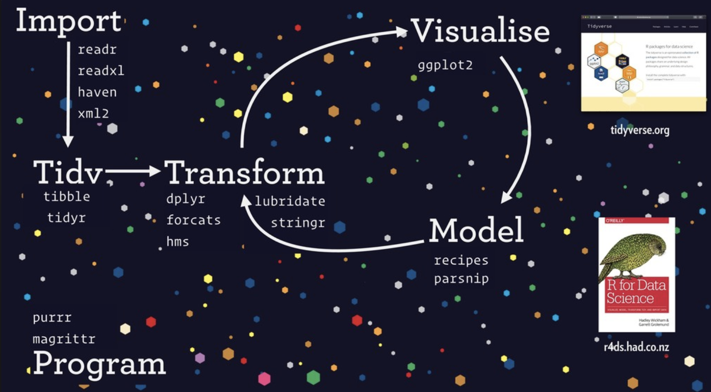
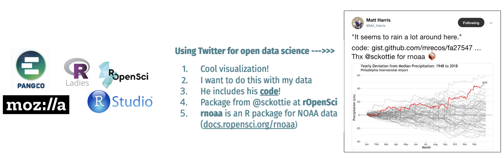

Openscapes Mindset
The Openscapes mindset is about better science for future us. It is about moving away from lonely and demoralizing individual science, and towards science that is more empowering, efficient, open, collaborative, inclusive and kind. It is the idea that open data science tooling & communities exist that are powerful and empowering, and that we can harness this power broadly to create the culture we want to be a part of.
Slides that have been presented during Champions Program Cohort Calls:
Better science for future us
Better science is science that is more open, reproducible, efficient, interoperable and also more diverse, equitable, inclusive, and kind.
Future Us is the idea of considering ourselves, our teams, and communities - those who will be joining and continuing our work - whether that is in the next hourm week, or decades.
Together better science for future us is an important mindset for science and society at large, and particularly important as we face global challenges in Earth and environmental science that are intensified with climate change.
Better science for future us is a real time investment, particularly for data-intensive research.
A Star Wars analogy
Data-intensive research can feel lonely and demoralizing. Like Luke Skywalker, we have all had moments where we feel stuck staring at a challenge that we can’t solve with the skillsets we have.
This might not be so obvious to describe as this situation, and could be many things at once that are hard to tease apart. Could be having a tedious process to organize and store data, not being able to run someone else’s code, or not knowing how to get started with software like GitHub.It’s often searching through emails, something like untitled14.xls or analysis_final_final.R
But it doesn’t have to be this way –
Open data science approaches are open, collaborative, & empowering – it’s like the Force from Star Wars because it enables us to solve challenges in ways we never would have imagined was possible.
And it doesn’t just help with the challenges in front of us, it also broaden our mindsets for the scope and scale of the research questions we can tackle. And again, it’s not just one thing all at once, it’s many smaller things that you can incrementally introduce that become more and more powerful.
And like the Force, open data science is not something that you do alone, but that you do with community.
Diverse, inclusive teams and communities are key to tackling our research so that it can have enduring impact. Just like in this illustration where not everyone is a Jedi, not everyone needs the same analytical skillsets but we can do more if we work together with a shared mindset and value each other.
Openscapes Mindset
In practice, the Openscapes Mindset is about many reinforcing ideas. It is the idea that open data science tooling & communities exist that are powerful and empowering, and that we can harness this power broadly to create the culture we want to be a part of.
Reframe data analysis & stewardship as a collaborative effort rather than an individual burden or personal craft
This is the mindset where you’re not alone, and it’s not too late. It’s not that everyone else learned this and you somehow missed out. You don’t need to feel shame; you were likely not supported to learn. This is about releasing those feelings and becoming a confident learner and contributor, no matter where you are starting from.
Redefine collaborators & community – beyond your own discipline/institution
Redefine collaborators to include folks that don’t work on the same projects or deliverables than you - this starts with other folks in your research group or lab. And it extends to strangers on the internet doing wildly different things than you are but united by the need to manage, analyze, and communicate around data.
Redefining collaborators and community opens opportunities for new perspectives, tools, methods, ideas, colleagues, allies, friends, jobs.
“Future Us” builds from the idea of “Future You/Future Self” being your most important collaborator (see Wilson et al 2017) but with a team science mindset promoting diversity, equity, inclusion, and belonging. How can you work today so that someone other than yourself could reproduce/contribute tomorrow? We describe this more in Lowndes et al. 2019. Cannot emphasize how critical these concepts are.Work now so that you can succeed later (whether that’s this afternoon or 4 years from now, whether it’s for you or someone you don’t know who will pick up where you left off).
Reimagine challenges – expect there is a better way
Reimagining challenges is based on the idea that there is a better way and that you can find and leverage it. It is the idea of reusing rather than reinventing. It is a release from lonely struggles that also reduces the cognitive load associated with starting from scratch. This means no more silently struggling, reducing the times you reinvent the wheel, and reducing the times you create weird, homegrown workarounds.
Expecting there’s a better way will help you focus on asking for help sooner, to find what you need faster, iterate with confidence & agency.
Strive to be more efficient, open, collaborative, inclusive, and kind
This means sharing imperfect work, create space, have empathy, learn together.
Open data science
We define open data science as the tooling and people enabling reproducible, transparent, and inclusive practices for data-intensive science.

This works as a beautiful feedback loop: Using similar tooling promotes and streamlines teamwork. And teamwork better equips you to learn new tooling. With this shared mindset, the idea of team becomes ever-broadening, along with your abilities to adapt to an evolving softwarescape.
Open data science feedback loop in action
There are innumerable examples of this feedback loop in action.
One great example is GitHub.
As a tool, GitHub can be used for collaborative version control that handles archiving, bookkeeping, and searching. It also has tools for project management, as well as publishing with Markdown.
Community norms with GitHub include the way files are organized, how documentation looks, and the idea that READMEs displayed on the homepage are used to help onboard new folks to using or contributing to the project. Additionally, folks use the GitHub Issues and Projects feature to discuss and coordinate. Used these ways, GitHub is enabling a new era of #SciComm (Science Communication).
GitHub enables collaboration by reducing both
analysis_final_final_final.Randre: fwd: FWD: analysis_final_final_final.R
Open data science key concepts
Data science as a discipline
Data science is “the discipline of turning raw data into understanding” (Wickham & Grolemund 2016, R for Data Science).
There are concepts, theory, and tools for thinking about and working with data. Just like a field chemistry has concepts for things like moleculte, theory for how they work, and tools for studying them, so does data science — for data.
An alternative title to this section would be “data science is a thing”: no matter what your study system or your question, there are discernible steps involved that when you embrace will make you more efficient. These steps are illustrated in this figure from Wickham & Grolemund: you will need to import/get your data into analytical software, wrangle it (tidy and transform), and THEN you can start understanding your data and asking your science questions by making sense of it visually and with models.

Tidying your data before asking your science questions is a critical point here. Don’t build your whole analysis around whatever weird format your data may have come in. Data tidying (“data wrangling”, “data prep”) can take up to 50–80% of a data scientist’s time (Lohr 2014, New York Times).
Mindset: Decouple your research questions from data questions, get help sooner
Data science also has an emphasis on communication. It is incredible what is possible on the communication front. This this one-minute video called What is RMarkdown? shows some of the possibilities.
Data science is not just for “big data” or AI or machine learning. You can use data science theory and tools no matter the size or context of your data.
Another important reason to think about data science as a discipline is that it helps dispell the idea that your study system is somehow unique - this is not the case when it comes to data. Distinguish data questions from research questions, learn how to ask for help. Don’t confound them or it will be really hard to iterate (for example, when you want to explore a subset like a specific year or place).
Expect there is a way to do what you want to do. This will help you find commonalities and unite you with other members of your research group, and beyond.
“When I was doing my PhD, I confounded my science questions with my data questions. I was studying squid, asking questions that no one had ever asked before. But I needed to reformat some dates in Matlab. I treated this date-formatting task also as something that no one had ever asked before. I was looking in the cephalopod literature for guidance; I couldn’t step back and decouple this data question from my squid question, and I struggled for much, much longer because of it.” - Julie Lowndes
Open data science tools exist - tools to match data science theory.

As Hadley Wickham described in his slides Welcome to the tidyverse, tooling exists for every step of this conceptual diagram. They exist to streamline working with data.
These tools are developed by actual people – nice people!
Open as a way to work
Open science is a daily benefit: it is a way to be efficient & streamlined. It is not just an added ask to share data at publication. It’s not only about sharing data. It’s about how you work, who you include, and the tools that you use. It starts with reuse: when you leverage existing resources, spend less time reinventing. It starts off with yourself: be open with yourself and your team first.
Open means easier onboarding – personal and collective. A focus on inclusive documentation and operations means that it is easier to return to a project, whether it’s picking up where you left off last month or when you’re handing it off to another person. It’s like an external memory (personal and collective).
Open requires trust and safety – starting with your team. Psychological safety is a big part of open.
Open is a spectrum – what you share, who you share it with, or how you share it. It’s not all-or-nothing.
- What: slides, tweets, blogs, forums, wikis… then also code, data, protocols
- Who: your self, research group, project team, institution…then also public
- How: internal servers, DropBox…then also Google Drive, GitHub, data repos
Mindset: Increasingly weave open into your work so it’s easier to share as you need
Open helps you find solutions faster as you learn to talk about your data, express your needs, and recognize solutions.
Open helps you build confidence – skills are transferable beyond your science. Working openly requires being empathic and inclusive – this will grow a network of allies.
Research group as a team
Focus on common parts that unite you, not what sets you apart.
Build horizontal leadership & resilience so that there is less reinventing, less knowledge lost, less loneliness. Think of the lab horizontally as skillsets & needs instead of vertically as science bins
It’s about diversity, equity, inclusion, and belonging: Instead of the skills you have when you come to the group determining how you will be able to Do Science, co-create shared practices and deliberate paths to onboard new people, and skill-share to continue learning together.
Mindset: What do our workflows have in common and how can we learn from each other
Science is collaborative. Let’s make it less heads down elbows out.
Collaborators & community (redefined) as a way to learn
Learn from, with, and for others. This helps overcome isolation, self-taught bad practices, apprehension (Stevens et al. 2018). It helps you transform from “self-taught” to “community-taught”.
“We learn from others by using their code and documentation, their blogs and tutorials, their talks and webinars. We learn with others online through Twitter, discussion forums and Slack channels, and in person through coding clubs, hacky hours, meetups, workshops and conferences. And we learn for others by writing tutorials and blogs about our own learning processes, or adding or fulfilling feature requests, which we can then contribute back to the community.” - Lowndes 2019, Open Software Means Kinder Science
Use the Internet more for science (it is such an underleveraged tool!). Learn and connect through Twitter, blogs, forums, new comms outlets…(It is such a cool time to be a scientist).

Mindset: Engage as feels right but know you’re not alone
Open science as part of the climate movement
” ‘We’ speaks to the collective, to collaboration, to community, to the relational work at hand. Addressing the climate crisis…will take everyone.
‘We’ speaks to justice, to how we do the work that needs doing and whose contributions are valued. We cannot, we must not, go it alone”
- Ayana Elizabeth Johnson & Katharine Wilkinson, All We Can Save
Recap
Open data science tools, practices, & communities exist and are powerful and empowering, and game-changing for science. They enable us to do better science in less time. They are like the Force from Star Wars:
- More powerful than you ever imagined
- Enable you to broaden the scope of the questions you can ask
- You can be a Jedi to others: pass forward what you’ve learned
- You can join & build diverse communities of allies
We can harness this power for science more broadly. We can create the culture that we want to be a part of – towards kinder science. We can do this with the Openscapes mindset:
- Be efficient, open, collaborative, inclusive, and kind
- Reframe data analysis as a collaborative effort rather than an individual burden or personal craft
- Redefine collaborators & community: Future You, Future Us
- Think like a team: share imperfect work and learn together
- Beyond your own discipline, and online
- Reimagine challenges: Expect there is a better way
- Iterate with confidence, agency, & community
- You’re not alone, it’s not too late
Our approach to help develop this mindset is by focusing on the following:
- Data science as a discipline
- Open as a way to work
- Group members as a team
- Collaborators and community (redefined) as a way to learn
- The Internet as an underleveraged tool for science
Notes and resources
- Biased by default: exploring discrimination in research code - Abby Cabunoc Mayes Bioinformatics Community Conference Keynote 2020
- Carpe Talk — Bryan & Averick. Consider for your next talk!